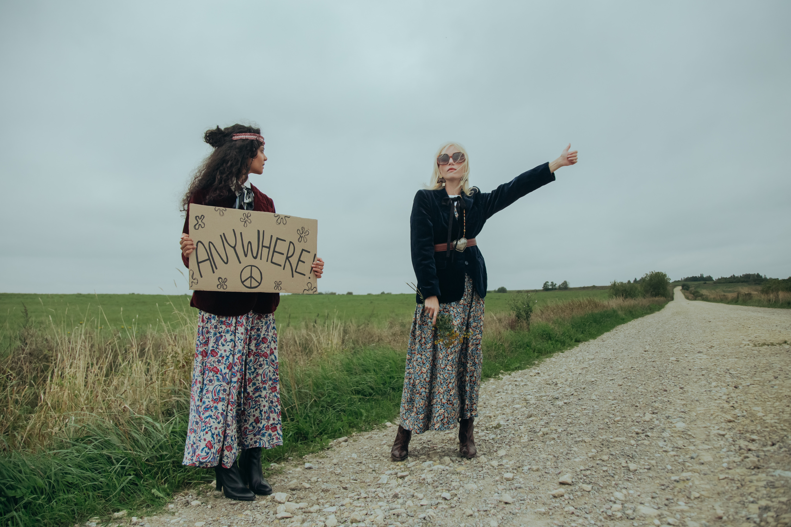
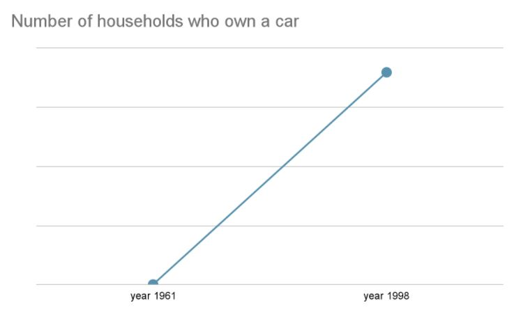
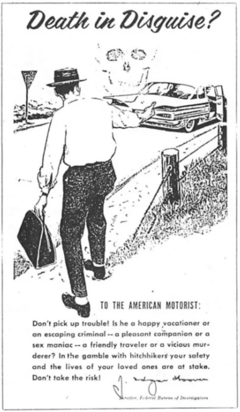
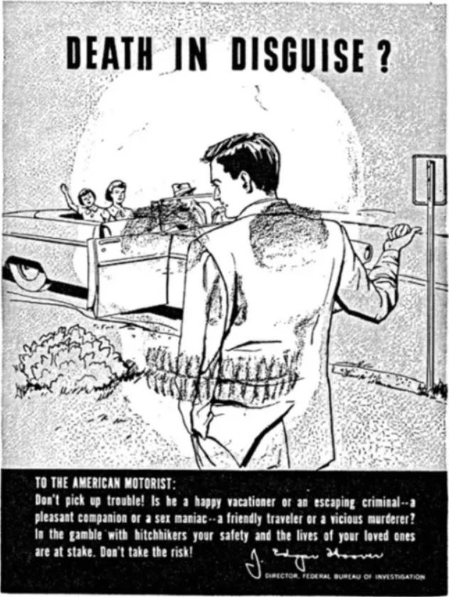
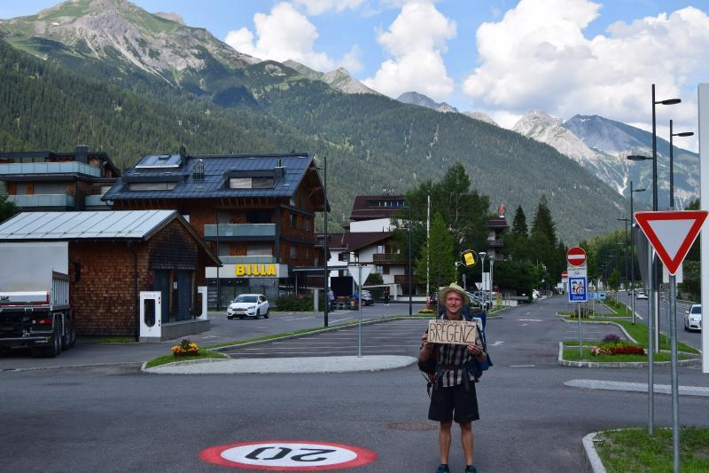
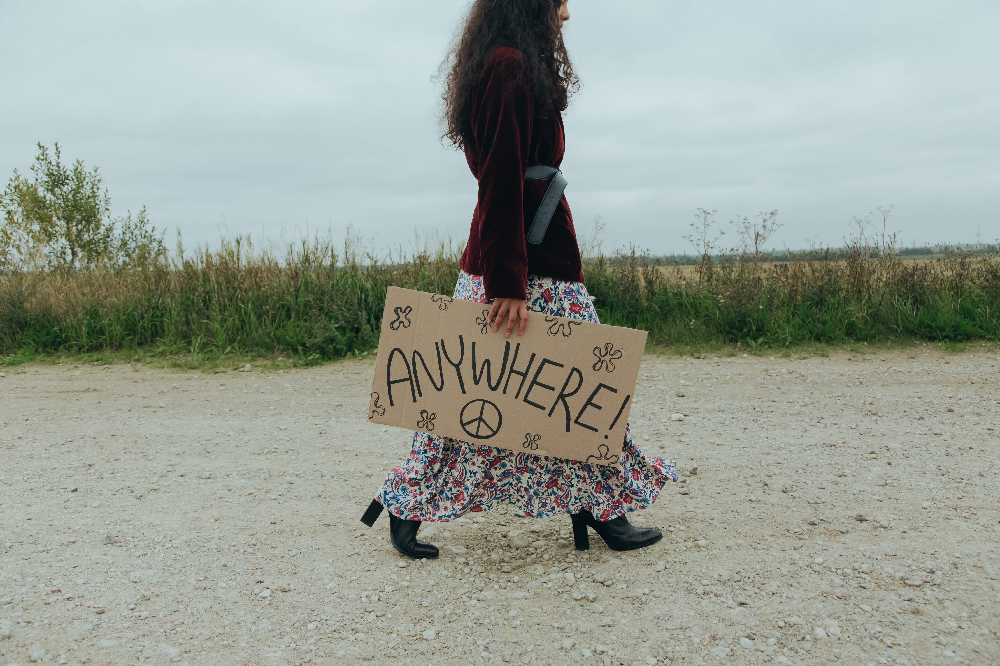

The beginning of a new transportation era...
The term hitchhiking refers to an individual asking for a ride from a stranger whether taking him or her
to the
desired destination or to the nearest station or location. Even though the ride is regarded as free, the
exchange
may be discussed and it’s entirely between the driver and the hiker to come to an agreement with each
other.
Hitchhiking has been a very common practice ever since World War II, when cars were very hard to come by
because
of the lack of gasoline and the tires and other necessities that were hard to obtain. Among the normal
population
that needed transportation during their daily life, there were also many soldiers that were trying to
get around.

Alan Pisarski, a transportation consultant who specializes in travel behaviour explains that the
next few decades can be
considered the “golden era of hitchhiking”.
“It became a very standard thing for people to help other people, especially if they were in
uniform”
The practice had declined dramatically during the 21st century, the primary reason being distrust and
fear of strangers.
Nowadays, hitchhiking is often perceived as dangerous, and few drivers are willing to pick someone up in
their car. Police
departments discourage it, and many states explicitly ban it. Very few people are now resorting to this
method of transport,
and usually only as a last resort when they have no other choice.
Is hitchhiking truly dangerous?
Most experts agree that one of the biggest factors in the decline of hitchhiking has nothing to do with
the
existing worries for one’s safety. It’s mostly about the huge growth we’ve seen in car ownership in the
last few
decades. As mentioned above, when hitching became popular, cars, gas and other parts were very difficult
to come by,
so this was pretty much the only way of transportation for a lot of people. Over the past couple of
decades, cars have
lasted longer and became cheaper. Since the 1960’s, the percentage of US households that owned cars has
steadily increased
and the proportion of those with more than one vehicle has grown even faster.
A similar growth can be seen in Great Britain as well. The Government’s statistics (“Social Trends
Pocketbook”, 2000)
show that “only three out of ten households [...] had a car in 1961, but by 1998 seven out of ten
households had at
least one”.

The widespread fear of hitchhiking is most probably motivated, not by evidence, but by other trends,
such as Smith’s
theory about the bad reputation and the title of “weirdo” that would be assigned to people who choose
hitching. This
general fear can also fit into a more general fear of strangers that has surfaced in American society
over the past few
decades. Parents will strictly instruct their children never to talk to strangers, but in reality, the
overwhelming majority
of child abductions are committed by family members.
In much the same way, about 30,000 people die in car accidents every year, but the few dozen who
are murdered along
the highways make hitchhiking a much more palpable threat than driving. Our perceived fear of
hitchhiking has surpassed
the actual risk of it.
“There’s a kind of safety bug that’s taken over in society. We’re much more reluctant to
interact with
strangers than before.” - Alan Pisarski
Another reason why hitchhiking has become less and less popular is not only that people are scared to
ask strangers for rides,
but also the fact that drivers are afraid of picking them up. Much of this has to do with the way in
which hitchhikers are perceived.
Graeme Chesters and David Smith wrote a sociological research paper back in 2001, called “The Neglected
Art of Hitch-hiking:
Risk, Trust and Sustainability”. Here they theorize that the effect of the increase of car ownership and
access was to
“normalise car use and thus to marginalise those without access to a car, including hitch-hikers”.
Therefore, the people
who were still resorting to hitching became by definition “deviant - suspect, disreputable, risky,
abnormal and potentially
dangerous, as criminals or people with mental disorders”. From a social point of view, the car became
“the major item of
individual consumption which provides status to its owner/user through the sign - values with which it
is associated
(speed, safety, career success, freedom, masculinity)” (Urry, 2000).
In other words, owning a car meant that you were a normal and successful person in the eyes of society,
while the opposite
made you a “weirdo” or even “potentially dangerous”. This social phenomenon heavily impacted
hitchhikers, because people
were more cautious and paranoid about letting a stranger in their car. A social group that suffered
severely from these
events were college students. In their situation, owning a car was impossible in most cases, making
hitchhiking their only
alternative. This, however, did not exempt them from the growing anxiety towards hitchhikers. Therefore,
this method of
transportation ceased to be an accessible, or even a thinkable, practice for many students who intended
to preserve their
status and reputation, leading to the slow disappearance of hitching that we can see today.
The Dangers of Hitchhiking
Arguably hitchhiking can give the hiker a thrilling adventure and an amazing experience, but let's not
to forget how hitchhiking
can pose a potential risk and furthermore, the stranger behind the wheel may not have only good
intentions.
The warning signs about hitchhiking are high, and an individual participating in this practice must take
a lot of precautions
and be highly alert at all times.
The hiker might experience a driver who has malicious intentions, therefore traveling
as a someone with a nomad lifestyle requires a lot of discipline and a deep understanding of the
potential danger.
But why do people find hitchhiking to be so scary?
Going back to the United States, during the same period when car ownership was increasing, the
Interstate
Highway System was built,
connecting most of the big cities with much faster roads that became the basis for most long-distance
travel. Traveling at higher
speeds made picking up a hitcher much more difficult than when people were slowly driving around smaller
towns. While hitchhiking
is not explicitly banned on all interstates, laws prohibit pedestrians from walking alongside them, so
getting a ride became much
more difficult. Meanwhile, a few states have made hitchhiking entirely illegal, while others have only
banned it on highways.
The vast majority of states permit it, but with additional laws that prohibit hitchers to stay on the
road
itself. While these
laws aren’t always enforced, Alan Pisarski says that they’ve made hitching riskier and served as a
deterrent.
Starting in the 1960s and ‘70s, some of the first laws against hitchhiking were passed and local and
federal law enforcement
agencies began using scare tactics to get both drivers and hitchhikers to stop doing it. For instance,
in 1973, the FBI
released a poster to the public that warned drivers that a hitcher might be a “sex maniac” or a “vicious
murderer”.


Source: FBI/public domain
Other campaigns emphasized the risks to women - and implicitly suggested that they would be blamed
for anything that happened to them.
Ginger Strand, author of “Killer on the Road: Violence and the American Interstate”,
recounted in a New York Times op-ed.
“Police officers at Rutgers University handed out cards to hitchhiking women that read,
~If I were a rapist, you’d be in trouble~.”
Along with all this propaganda also came Hollywood. It’s difficult to tell if real-life hitching crimes
preceded their
horror movie counterparts, but starting in the 1950s and then gaining traction in the ‘70s and ‘80s, the
“psychopathic
hitchhiker” trope was born.
The propaganda, followed by all the horror movies, seems to have achieved its goal, because the fear
regarding hitchhiking
grew exponentially. In the present, most of the people don’t even take the idea into consideration
because they deem it
way too risky and dangerous to even attempt it. This became a dominant perception around the world,
despite the fact that
there is no actual evidence that declares hitchhiking as being that dangerous.
In her op-ed, Strand states that we’ve never had good evidence that hitchhikers - or the drivers who
pick them up
- are particularly likely to be raped or murdered. One of the very few studies on the topic, conducted
by the California
Highway Patrol in 1974, concluded that “the results… do not show that hitchhikers are over represented
in crimes or
accidents beyond their numbers”.
The study did find that women were more likely to be raped than men while hitchhiking, a fact that is
obviously still
true in the present, but most murders, violent injuries and rapes are committed at home by a friend,
family member or
acquaintance of the victim. According to the FBI, between 1979 and 2009, there were only 675 cases of
murder or sexual
assault along the Interstates, and not all of them involved hitchhikers.
He is an exchange student in Norway, from The Czech Republic who has been hitchhiking ever since he was 15 years old.
In this time interval, he has traveled through over eight countries and hitched in over 600 cars. Whenever someone
encounters him, he will have a different or new story to tell.
After he finished highschool, he decided to pack his bags and start traveling around Europe. When we asked about
his experience with hitchhiking, he told us many stories about the people he met and the places he’s been to. He
says that hitchhiking is actually really safe and it offers you the chance to meet so many new people and discover a lot of
opportunities. One time in his travels, he was even offered a job. He went on to talk about his time in Austria, where he
went to improve his German and met a guy that took him around and showed him beautiful places that most tourists don’t get to see.

He told us about a time when he encountered one of his brother’s university professors with whom he had a deep and beautiful
conversation about life. Another time, he ended up singing along to random songs with a 80 year old lady that picked him
up and then there was the time when he hitchhiked to Halden, for his exchange programme here.
When we asked him if he was never worried about hitching, especially for such long trips, he told us that he was used to
it and it was “riskier for the person that takes you into their car”. After all these years hitchhiking, he has become very
accustomed to it and feels very comfortable around strangers. His worst experience has been a lady in her forties that went
on to complain to him, or “get crazy”, as he described it, about her husband and men in general.
Even if he feels comfortable when traveling with strangers, Ondřej still needs to keep his mind open to potential risks.
He advises everyone to be prepared for bad scenarios, as rare as they are:
“Carry a knife, in case of anything. I always carry a knife with me for longer trips, but I never had to use it.
Maybe pepper spray would be a good alternative for girls.”
When he was asked whether he would encourage anyone to follow his lifestyle, he responded with a very cheerful and
firm “Yes!”. He sees hitchhiking as a very safe and amazing way to travel the world:
“I would highly recommend it. If it wouldn’t be safe, I wouldn’t recommend it. It’s the best way to travel,
because you can get to know new countries and their culture, you get to meet new people and it is always very pleasant.
It’s great for students! It is a very cheap alternative and you get to travel without a care in the world. So I would
recommend it for everybody to just try it and see for themselves.”
Even in the present, with so much fear surrounding the concept of hitchhiking, there are still people who appreciate its charm
and many benefits and will not let themselves be discouraged by rumours and irrational anxiety. These are the people that will
keep this art alive for many years to come.

With all the technology that has been developed in the latest years, new ways of ride-sharing have appeared.
More recently, smartphones and location-based apps have allowed people to share rides with strangers again.
They make this process seem a lot safer by providing information about them, usually through social media profiles,
like Facebook.
These apps take quite a few different forms. There’s CabCorner, Via, UberPool and Lyft Line, which allow you to
split a ride with people nearby who need to get to a similar destination. The Hovee app matches you with coworkers
or other commuters who share a similar route to work and Carma Carpooling does the same, but charges riders and pays
the drivers to offset gas costs.
Of course, it’s clear that all of these are quite a bit different from someone hitching a ride by sticking their
thumb out on the side of the road, but it achieves the same basic benefit of putting otherwise empty seats in cars
to good use, therefore reducing traffic, and allowing people with no other means of transportation to arrive at their
desired destinations.
Overall, hitchhiking is a mode of transportation that solves more problems than it creates. It allows people to discover
the world and meet so many new characters that could heavily influence your life in good ways. It allows you to experience
new and unexpected things, from which you will come out with stories that will linger with you throughout your entire lifetime.
Of course, the risks that people fear all the time are still there, but bad things rarely actually occur and they can usually
be avoided with a bit of precaution and some safety measures.
The benefits highly overweight the risks when it comes to hitchhiking and no one who has an interest in this activity
should let themselves be discouraged by a general fear created from propaganda and Hollywood movies. In my personal opinion,
I believe it’s time to put all these fears aside and let ourselves be encouraged by those who have already had all these
incredible experiences to start believing in people’s kindness again and bring back that golden era of “good feeling”
when people were actually comfortable around each other.